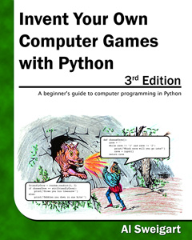
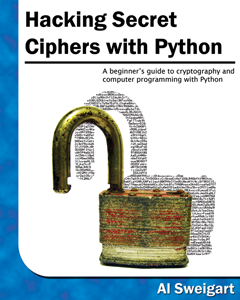

Python
for fun & profit
by Sachin
Why Python?
Easy to learn
Free and Open Source
Scientific Computing
Powerful interactive interpreter
Readily available libraries
Well documented
Easy to learn
MIT Open Course Ware

Free and Open Source
Power to share

Scientific Computing
NumPy, SciPy, Pandas..

Powerful interpreter
IPython, bPython, & python
Well documented
def is_admin(user):
'''Allow if user is admin.
Usage:
----
@is_admin
def draw_circle(radius=4):
...
----
user: A valid username
Raises an exception if user is not admin
'''
if user != 'admin':
raise Exception("Access denied!")
History

Guido van Rossum, Dropbox
Implementation started in December 1989
Python 1.0 - January 1994
...
...
Python 3.5.1 - December 2015
Functional programming tool
lambda, map, filter, reduce..
were inspired from lispWhere can I use Python?
Application development

Web development
Game development
Cryptography
Hardware
Who uses Python?
"Python is fast enough for our site and allows us to produce maintainable features in record times, with a minimum of developers" said Cuong Do, Software Architect
"Python has been an important part of Google since the beginning,.." Peter Norvig, director of search quality at Google

"I have the students learn Python in our undergraduate and graduate Semantic Web courses." said Prof. James A. Hendler. University of Maryland

Python modules for ExpEYES Junior developed by Dr. Ajith Kumar, IUAC, New Delhi
NASA, IBM, Yahoo, Walt Disney..
I use Python in..
- Web development in Django
- System scripts to ease my
work
- On Raspberry Pi
ExpEYES Junior attached to GNU/Linux based tablet(Aakash). GUI for ExpEYES is written in Python
In this course
Introduction to Python Programming Language
- Get familiar with Python interpreter
- Python virtual environment
- Python package utils
- How to get help?
Data structures
- Basic data types
Control statements
- if..else
- while
- with
- for
Functions
- Define a function
- Function parameters
- lambda function
- Python's builtin functions
Modules
- Python module
- Correctly using a module
- Built a module/Package
OOps, Decorator, Iterator & Generators
File i/o
Testing, Socket Programming, & Threading/Multiprocessing
- Examples
Questions?
May the Force be with you
Online: http://psachin.github.io/py-starwars | Source: https://github.com/psachin/py-starwars